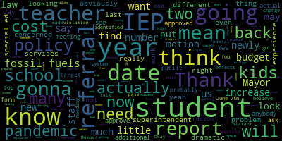

AI-generated transcript of Regular School Committee Meeting
English | español | português | 中国人 | kreyol ayisyen | tiếng việt | ខ្មែរ | русский | عربي | 한국인
Back to all transcripts
[Lungo-Koehn]: Baker's March 12 2020 order suspense for certain provisions of the open meeting law. Chapter 30 a section 18 and the governor's March 15 2020 order imposing strict limitations on the number of people that may gather in one place. This meeting of the medical school committee will be conducted via remote participation to the greatest extent possible specific information, the general guidelines for remote participation by members of the public in a parties with the right into requirement to attend this meeting. can be found on the City of Medford website at www.medfordma.org. For this meeting, members of the public who wish to listen or watch the meeting may do so by accessing the meeting link contained herein. No in-person attendance of members of the public will be permitted, but every effort will be made to ensure that the public can adequately access the proceedings in real time. via technological means. In the event that we're unable to do so, despite our best efforts, we will post on the City of Medford or Medford Community Media website an audio or video recording, transcript, or other comprehensive record of proceedings as soon as possible after the meeting. Additionally, questions or comments can be submitted during the meeting by emailing medfordsc at medford.k12.ma.us. Those submitting must include the following information, your first and last name, your Medford Street address, your question or comment. call in through phone number 1 9 2 9 2 0 5 6 0 9 9. Please enter meeting ID 9 7 0 7 4 1 3 5 0 4 9 when prompted. Member Crest, if you could please call the roll. Yes.
[Kreatz]: Member Graham. Here. Pretz here. McLaughlin is absent. Ms. Stone is absent. Russo, Mr. Russo?
[_ktinY_FSkU_SPEAKER_14]: Present.
[Kreatz]: Ms. Van Zandt? She's present. Yeah, you're here, okay.
[Lungo-Koehn]: And Mayor Lungo-Koehn? Present. Five present, two absent. If we could all please rise to salute the flag. I pledge allegiance to the flag of the United States of America, and to the Republic for which it stands, one nation, under God, indivisible, with liberty and justice for all.
[Graham]: Motion to enter executive session?
[Lungo-Koehn]: Yes, motion to enter executive session by member Graham, seconded by Second member credits before we call the roll let me just read what we're going in for executive session of the school committee pursuant to general laws 38 section 21 to conduct a collective bargaining strategy session on the basis that an open meeting. may have a detrimental effect on the bargaining positions of the Medford School Committee. Specifically, the Medford School Committee will discuss impending negotiations with several bargaining units and further to discuss strategy in preparation for ongoing litigation. Amico versus City of Medford on the basis that an open meeting may have a detrimental effect on the litigation position of the Medford School Committee. Medford School Committee will reconvene in public session following the executive session. On that motion, if you could call the roll, Member Kreatz.
[Kreatz]: Yes. Ms. Graham?
[SPEAKER_11]: Yes.
[Kreatz]: Craig? Yes. Ms. McLaughlin, absent. Ms. Miss Stone, absent. Mr. Russo? Oh, okay. He's muted. Yes. Okay. Yes. All right. He's muted. Okay. Ms. Van de Kool?
[Lungo-Koehn]: Yes. And Mayor Lungo-Koehn? Yes. Five in the affirmative, two absent. We are going to enter executive session.
[Unidentified]: Is there a motion on the floor? Motion to revert to the regular meeting.
[Lungo-Koehn]: Is there a motion for approval of the minutes?
[Kreatz]: Oh, sorry. Yes, motion to approve the minutes.
[Lungo-Koehn]: I thought that's what you meant, motion to approve the minutes. Seconded by? Van der Kloot. Van der Kloot. Van der Kloot. Van der Kloot. Van der Kloot. Van der Kloot. Van der Kloot. Van der Kloot. Van der Kloot.
[McLaughlin]: Van der Kloot. Van der Kloot. Van der Kloot. Van der Kloot. Van der Kloot. Van der Kloot. Van der Kloot. Van der Kloot. Van der Kloot. Van der Kloot. Van der Kloot.
[SPEAKER_11]: Van der Kloot.
[McLaughlin]: Van der Kloot. Van der Kloot. Van der Kloot. Van der Kloot. Van der Kloot. Van de Member McLaughlin, yes. Member Mustone, absent. Member Ruseau. Yes. Member Van de Kloop. Yes. Mayor Lungo-Koehn.
[Lungo-Koehn]: Yes. Six in the affirmative, six at present, one absent. Oh, sorry, six in the approval of minutes, one absent. Number four, approval of bills, transfer of funds, and approval of payrolls.
[Ruseau]: Motion to approve.
[Lungo-Koehn]: Motion to approve by Member Ruseau, seconded by Member Kreatz. Roll call.
[McLaughlin]: Member Graham?
[Lungo-Koehn]: Yes.
[McLaughlin]: Member Kreatz? Yes. Member McLaughlin, yes. Member Mustone, absent. Member Ruseau?
[Ruseau]: Yes.
[McLaughlin]: Member Van der Kloot?
[Lungo-Koehn]: Yes.
[McLaughlin]: Mayor Long-Tempe?
[Lungo-Koehn]: Yes. Six in the affirmative, one absent. Approval of payrolls has been approved. Five, is there a report of secretary?
[McLaughlin]: No, there is not.
[Lungo-Koehn]: Nope. And number six, report of committees. We have our regularly scheduled Committee of the Whole meeting. Oh, actually, Committee of the Whole meeting on 4-26-2021. Is there approval of the minutes?
[SPEAKER_16]: Motion to approve.
[Lungo-Koehn]: I, Member Ruseau, seconded by- Second. Member Kreatz, roll call.
[McLaughlin]: Member Graham. Yes. Member Kreatz. Yes. Member McLaughlin. Yes. Member Mustone. Oh, sorry. Absent. Member Ruseau. Yes. Member Van de Kroot. Yes. Mayor Lungo-Koehn.
[Lungo-Koehn]: Yes. Six in the affirmative, one absent. Minutes are approved. We have our minutes from the April 28th, 2021 curriculum subcommittee. That's me.
[Van der Kloot]: Yes, we met from four to 530 on April 28 that evening we discussed the science curriculum and the fine arts curriculum of particular importance in terms of science was that clearly this year was not a particularly good year for hands on. learning, but we should be set up for next year. The sequence of courses has changed in high school. In ninth grade, we're doing biology and 10th grade chemistry and grade 11 and 12 are electives. In the FOSS grades K to five, we're on year two of adoption and the overall cost was 285,000. They're in biology in high school at the high school biology, we need to consider adopting a new program. The Pearson Biology 2021 program will cost approximately $47,700 for textbooks and a six-year digital license. And this is going to be something that we're going to be seeing, hopefully, in our budget. This year, we were given a free year because we were unable to complete the pilot in 2020 for reasons we understand. The science department is satisfied with how it was going. And there is also a, we are being offered a smaller, slimmer book at no cost, Biology the Core, and it's seen that this book could be used very beneficially for EL and special ed populations because there's less text. A new electives committee will start next year and we're going to work on promoting a co-teaching model. It was overly, I think the most important thing was it was clear that there were significant textbook needs. And I think that we'll be discussing that. In terms of music, of course, there was no singing this year at the elementary level. However, there were other music lessons that stressed percussive activities and other things as were allowed. One of the things which we talked a little bit about was that we had, of course, no introduction of the violin program. or of the band program, violin at fourth grade band at fifth grade. We also talked about funding for those programs. The violins are offered to students for 20, I think in the fourth grade, all students get the opportunity to do that. I think the cost for the whole year is 25 and there's $25. And there is a way of applying to, not pay that. At the fifth grade level, there is no formalized way of providing students instruments who can't afford the rental fees. It's always been an informal, the head of the department working to make sure that every kid who really wanted to play had an instrument. So we might look at that at some point. There is a music program called Quaver that was utilized this year to help with the music program. because of all the things we couldn't do, and that seems to have gotten very good results. There is a much longer, of course, copy of the minutes, but I think I'll leave it at this for the time being.
[McLaughlin]: Motion to approve. Second.
[Lungo-Koehn]: Motion for approval by Member McLaughlin, seconded by Member Ruseau. Roll call, please.
[McLaughlin]: Member Graham.
[Lungo-Koehn]: Yes.
[McLaughlin]: Member Kreatz. Yes. Member McLaughlin, yes. Member Mustone, absent. Member Ruseau. Yes. Member Van der Kloot. Yes. Mayor Lungo-Koehn.
[Lungo-Koehn]: Yes, I have the affirmative. Six in the affirmative, one absent. Minutes are approved. We have our 5-3-2021 curriculum subcommittee meeting also by Member Paulette Van der Kloot.
[Van der Kloot]: Mayor, this one, the minutes were done, but they weren't put into our folders. So we're asking that that holds till the meeting of May 24th.
[Lungo-Koehn]: Okay, so motion to table by member Randa Clute, seconded by member McLaughlin, roll call.
[McLaughlin]: Member Graham?
[Lungo-Koehn]: Yes.
[McLaughlin]: Member Kreatz? Yes. Member McLaughlin, yes. Member Mustone, absent. Member Ruseau? Yes. Member Randa Clute? Yes. Mayor Long-O'Connor.
[Lungo-Koehn]: Yes, 60 affirmative, one absent. The minutes are tabled until our May 24th school committee meeting. 5-3-2021 committee of the whole, which was our budget meeting for elementary and secondary budget hearing. Is there a motion for approval of those minutes?
[McLaughlin]: Motion to approve.
[Lungo-Koehn]: And Mayor McLaughlin seconded by. Member Kreatz, roll call, please.
[McLaughlin]: Member Graham. Yes. Member Kreatz. Yes. Member McLaughlin, yes. Member Mustone, absent. Member Ruseau. Yes. Member Van der Kloot. Yes. Mayor Lungo-Koehn.
[Lungo-Koehn]: Yes, six in the affirmative, one absent. Minutes are approved. We have 5-5-2021 Rules, Policy, and Equity subcommittee meeting. Member Ruseau, policy on harassment.
[Ruseau]: Thank you, Mayor. So we had previously approved this policy, and upon approval, we had sent it back for additional cleanup, if you will. It was a policy that we had been urged to pass from our attorney. So we passed it as quickly as possible, but then went back and made some modifications. There were no substantial changes other than cleaning up the language, and I'm just realizing Is that actually in our packets? Is the policy? Since I had it, I didn't look to see if it was in our packets. Maybe we have to motion to, does anybody else have that actual policy?
[Lungo-Koehn]: I didn't see it in what Susie sent us.
[Ruseau]: Okay, motion to table to our May 24th meeting.
[Lungo-Koehn]: motion to table my member Rousseau, seconded by? Second. Member Kreatz, roll call, please.
[McLaughlin]: Member Graham? Yes. Member Kreatz? Yes. Member McLaughlin, yes. Member Mustone, absent. Member Ruseau? Yes. Member Van der Kloot?
[Lungo-Koehn]: Yes.
[McLaughlin]: Mayor Long-O'Karn?
[Lungo-Koehn]: Yes. Six in the affirmative, one absent. Motion, minutes are tabled, so we'll go May 24th school committee meeting. Last, we have the meeting from last week on May 6th, 2021, which is our special education budget hearing. Committee of the whole. Is there a motion for approval?
[McLaughlin]: Motion to approve.
[Lungo-Koehn]: By member McLaughlin, seconded by.
[Graham]: I didn't get these in my packet. And I'm looking on the drive. Did I miss them?
[McLaughlin]: Were they in the second email? that they were.
[Lungo-Koehn]: Is there a motion to table?
[McLaughlin]: Motion to table.
[Lungo-Koehn]: Motion to table by Member McLaughlin, seconded by... Second. Member Graham, roll call, please.
[McLaughlin]: Member Graham. Yes. Member Kreatz. Yes. Member McLaughlin, yes. Member Mustone, absent. Member Ruseau. Yes. Member Van der Kloot.
[Lungo-Koehn]: Yes.
[McLaughlin]: Mayor Longo-Khan.
[Lungo-Koehn]: Yes. Six in the affirmative, one absent. Motion to table those minutes until our May 24th school committee meeting. Number seven, community participation. Any citizen in the audience may be given permission to speak once at school committee meetings regarding any item on the agenda for up to three minutes on any one item. Community participation portion of the agenda will be established, which will give any citizen the privilege of placing any item before the school committee or be heard on any item. Any item to be presented must be submitted in writing to the superintendent of schools by Wednesday at noon prior to the scheduled meeting, with a maximum of five minutes allowed for any one presentation. Public participation emails, questions, or comments can be submitted during the meeting by emailing medfordsc at medford.k12.ma.us. Those submitting must include the following information. Your first and last name, your Medford Street address, your question or comment. Number one, we have Maureen Ronane, 43 Winter Street, Medford, parent and speaking about dyslexia. Ms. Ronane. Just let me find.
[Unidentified]: Thank you.
[Lungo-Koehn]: You're good.
[Unidentified]: Yes.
[8uC6Vq145lQ_SPEAKER_01]: Okay. Um, okay. Um, thank you for having me here tonight. My name is Maureen running, and I'm the mother of six children, my three elementary school struggle significantly with reading. They work with dedicated and professional teachers that genuinely care about the children. Recently, the Department of Education released the Massachusetts Dyslexia Guidelines to help guide districts and families understand and remediate this common language-based learning stability. I believe everyone has a copy of it, and it's on the minutes. And on page 49 of the Dyslexia Guidelines, it references this Every Student Succeeds Act, which is called SF for short. This federal law was passed in 2015, and it mandates that all reading intervention be evidence based peer reviewed and published in a journal. This effectively eliminates the eclectic approach, also referred to as pulling from different programs reading programs that takes place in the district. Our teachers need support and training in order to deliver evidence-based reading instruction with fidelity. Our ETLs need to be trained in evidence-based reading instruction so that they know what a student is receiving is appropriate in accordance with this federal law. My second son, Aiki, states that he will use picture cues to decode This is guessing, it's completely inappropriate. It's not evidence-based or peer reviewed. It actually interferes with learning to read because it takes the student's eyes away from the letters. I understand that the district has made some changes in early literacy. However, we're still using journeys as a core curriculum that was so flawed that it is effectively banned in several states because it lacks some of the essential components for reading instruction. The district did recently buy a patch, but that doesn't help the kids that already went through this program. Our teachers are mandated to use the DRA, and I've seen F&P, as reading assessments. Independent testing has stated that a teacher would be more accurate percentage-wise at predicting reading failure if she just flipped a coin. I personally reached out to Dr. Matthew Burns, who did this study, and he wrote that it is terrible at identifying struggling readers, and that most kids who struggle with reading couldn't actually read the book at their level. Prevention is the key. And I'm asking that all pre K and eighth grade general ed education teachers and their and the administration, take professional development in the language essentials for teaching reading and spelling program. It's also called letters le TRS by Dr. I am asking that every single special education teacher that supports students academically be trained and certified in lips or in Gillingham and ravo, which are all evidence based and peer reviewed programs that they teach with fidelity. We also need one person that oversees all tiers of reading instruction and is accountable for ESSA compliance. All of our children deserve to be taught to read in school. Literacy should not be reserved for the lucky few that learn to read with little instruction or those with parents that have a lot of money for neuropsych testing, tutors, advocates, lawyers, and specialty dyslexia schools. I am asking that you request for significant funding from our city council so that all children can be taught to read, and our teachers, who are wonderful, are supported in this endeavor. Thank you.
[Lungo-Koehn]: Thank you, Ms. Ronayne. Number- Mayor. Yes, member Van der Kloot.
[Van der Kloot]: We received two letters this week that expressed concerns about comments that were made at a subcommittee meeting. So I think I need to read those. The first one was received was from Jenny pagan says dear mayor. I'm ready to express my concerns about a motion that was passed by school committee member probably so during school subcommittee meeting the other night, school committee member Mr. so motion to prohibit citizens from saying they are lifelong resident, or how many years they have lived in Medford for during school committee. during school committee meetings, which are public meetings, if I'm not mistaken. This motion was passed by two other members, Jenny Graham and Melanie McLaughlin. It is set to go in front of the school committee on the whole on May 10th for a vote, which it is not. But while I understand our city, state and country is changing, I truly worry about the direction we are going in. We are censoring like never before. We are prohibiting what people can say what people can read and what people can watch to prohibit a resident from sitting how many years they have lived somewhere is not only illegal but immoral. How can you as a mayor and resident allow this we are seriously teetering on dangerous ground when we allow a school committee in a city of 60,000 people to start dictating what residents are and are not allowed to say in a public meeting. The school committee has done very little this year to address the needs of students. I have seen bickering, crying, and complaining in no actual doing. You have a superintendent that brings us national news every time there's a meeting. I watch the news. I do not need a recap of it by Medford superintendent. We need the school committee and superintendent to help our children. You have families suing the district to pay for their children to go to other schools that will help them because Medford district does not. I just pause to say, of course, these are the views of this writer. I know that suits will cost the city thousands of dollars. And I would know since I've already looked into one for my dyslexic daughter, you have helped one meeting to, you have held one meeting to address the concerns brought forward by the families with dyslexic children in which the high reps of the system came on and praised themselves for early screening. Dessie already made early screening a mandate, but they were right. quite proud to go on, and I think they had anything to do with this. While it's a step, it intervenes without diagnosing. So while I am truly happy for the struggling reader in kindergarten to get intervention, I guess the dyslexics in fourth, fifth, middle school and high school can just keep on struggling. I'm tired, I'm scared, and I'm beyond frustrated. When does it stop? When do we start getting back the issue of our children? We set up committees upon committee to address the 15,000 plus name change of school, but I still cannot get a clear answer of what reading program they're going to give my daughter for dyslexia. You have parks falling apart. My daughter was at a basketball clinic today and was covered in dirt because the court is falling apart. Same baseball court the students at the Curtis use. Our city is dividing, our school committee is out of control and our superintendent cares more about social justice in other states than she does with the actual children of the city. You are the elected mayor, do something please before our city falls further apart. Thank you, Jenny Lynn Pagan, third generation lifelong Medford resident. The other letter which I received was from Jada Higgins, dear elected school committee members. I'm ready to express my concerns of a motion put forward by Mr. Rousseau during a school committee meeting. I am shocked that a school committee member who is elected by the community now believes he has the right to silence the same community. It is our right to have freedom of speech even if the speech doesn't align with Mr. Rousseau's beliefs. The same line he is trying to stop problem from saying when they call in is written in many elected official speeches in Medford and beyond. I don't believe people say it because they believe they are more important than someone who has lived here a shorter time. I believe it said because they are proud to be from Medford. We didn't move here because it was convenient for our commute to work. We stayed here because we love it here. We love the fact that our kids can go to school with their cousins and with our childhood friends' children. We love that if We are running late, we can make a call and either a family member or a friend will always be there to pick our kids up from school. We love that our classmates are now the ones protecting this city as police and firefighters. We love it here. My parents both grew up here and chose to stay and raise their children here. My brother and I have made the same choice. We chose this for the love of our city and the great people who make up this community. With all due respect, Mr. Rousseau, do the job you were elected to do and focus on the children in this community education. Focus on the kids struggling daily with learning disabilities. Focus on getting all students back to school safely. Focus on closing the gap between children and stop dividing the cities. Focus on creating an environment in the schools where kids can be kids and have fun while learning. Focus on finding and writing grants to update MHS. There are so many other areas you could focus on, but silencing this community should never be your focus. Sincerely, Jada Higgins, a lifelong resident, mother of three, school-aged children. Those are the two letters I received.
[Lungo-Koehn]: And into the Mayor, into the Medford SC's email, thank you for reading those. Member McLaughlin?
[McLaughlin]: Thank you, Mayor. I actually wanted to respond to Ms. Ronayne and thank her for her advocacy. She has been a long standing advocate in this work and I know myself as an advocate, advocating for our children is not easy especially coming before officials and doing all the research that she has done so I would like to we will move forward with. I know that we have been discussing if Miss Ronayne was not in the budget meeting for the last one, we were discussing professional development on Orton-Gillingham, so we will definitely be keeping that in mind as we're moving forward with the budget. So I wanted to thank her for that. And then I did want to address the letters. I want to say I was not a part of that meeting, so I'm missing some of the context of this, although I was made aware after about some of the concern. which of course is understandable and I want to ensure that people in the community do not, I'm concerned that people think that we're trying to, the rules policy and equity subcommittee is trying to quash public speech. We couldn't even if we wanted to. It's, you know, people can get up and frankly say for the most part what they want given the amount of time that is part of the policy so that was not the intent so I'm not sure you know where this is coming from or why people are feeling that way, but again, I was not at the first portion of the meeting. So I have no problem with people saying how long they've lived in Medford. I've lived in Medford for 20 something years, and I don't know how many minutes or seconds, but I am proud to live here. I love this city. I raised my children here, and this is my children's home. They will always be from Medford, and we are proud of this community, and it is a community as a whole. So it's new residents, old residents, multi-generation residents, brown, black, white, yellow, every color, you know, you can imagine, we are Medford, and we need to figure out how to move forward on this. And as far as our superintendent, I want to say, I am so grateful that we have a superintendent that is committed to social justice. And I want to say it's about time that people are talking about social justice issues, because they are part of an education for our children. for all of our children. So thanks to the folks who are writing, we would never ever ask that people not be inclusive in our community. Thank you.
[Lungo-Koehn]: Thank you, Member McLaughlin. I appreciate you clearing that up because my phone rang off the hook about that policy. Member Van der Kloot.
[Van der Kloot]: Yes, well, I just want to say that, you know, I wasn't part of that subcommittee. I certainly would not support anything that says that a community member can't express how long they lived in Medford or their lifelong residence, or if they just moved in yesterday, because I do believe it's a question of the person who's coming before us has The right to speak openly and for many people, they want to express that. So I don't know how exactly that conversation all. went forward, we did not have the transcript of the meetings tonight. And I understand that Mr. Russo is going to relook at that if I'm correct. But I don't want to speak for the subcommittee. I'm just expressing my own own personal feeling. I also want to stand up and say thank you to the superintendent. We've heard this now reframe a couple of times. about concerns when she mentions other things, other events that are going on in the world. I think it's very important that we realize that we are part of the world and the things that the superintendent is talking about, certainly around social justice issues, racism, diversity issues, that those are important to us. And that I actually take exception to people who don't feel You know, we are sitting here and listening intently. We give opportunity to the community to speak, but I also certainly want to always be open and hearing our superintendent express her thoughts. That's really, frankly, what we pay her for. Thank you, member Kreatz.
[Kreatz]: Cathy you're muted. Yes. Okay, sorry. I just realized I had it kind of blocked. Couldn't see the microphone. Yes, I just wanted to say that I wasn't at that meeting either. I was busy doing something else but I did, you know, get increased from different residents and I, I to agree with the residents that I don't want to limit what residents are saying if they want to mention that they've lived here for many years or three months or six weeks, that's their right and responsibility to say that. So, I'm glad that the policy committee is going to revisit some of the language. I also recommend and maybe suggest that the language get reviewed by the city solicitor's office, or, you know, if they could seek advice from them to make sure that, you know, there isn't anything in the policy that's going to limit I just wanted to mention that. And I also want to mention that I enjoy hearing from the superintendent when she shares her her, you know, biweekly updates with us, and it's interesting, and it's just informational and I appreciate it. So I just wanted to mention that as well. Thank you.
[Ruseau]: This is about a blatant violation of open meeting law, as we sit here and talk about the laws and the Constitution. This is as blatant a violation of the open meeting law as I can probably fathom. So can I suggest we move on before we all end up fined?
[Lungo-Koehn]: Reporter of Superintendent, number one, superintendents updates and comments, Madam Superintendent.
[Edouard-Vincent]: Good evening, Madam Mayor and members of the school committee. I thank you for this opportunity to come before you and share my remarks. Good evening, this is your proud superintendent, Dr. Maurice Edouard Vincent. First off this evening in my remarks tonight, sadly, I must inform you all that we recently lost a member of our Mustang community. One of our culinary arts teachers at the Medford Vocational Technical High School, Mr. Dennis Moriarty. Dennis began his teaching career with the Medford Public Schools in 1995. He was a teacher and mentor to so many of his students. One of the vocational teachers, Mr. John Brown, said the following, and so this is an excerpt of what was submitted On Tuesday, April 27th, 2021, the Medford Public Schools lost a valuable member of the community. Dennis Moriarty dedicated 26 years of his life teaching culinary arts at the Vocational High School. Dennis had been a part of the culinary program since its humble beginnings when the only kitchen equipment was a stove and an ice box. Dennis was extremely proud of the culinary program and he cherished working with the youth of Medford and serving the community. Dennis was also an avid outdoorsman who loved to spend time with friends, hunting, fishing, or riding motorcycles. He was especially proud of catching the biggest cod on one excursion on the Bunny Clark and never missed an opportunity to show someone the sticker he received for that occasion, which he had proudly and conveniently displayed behind his desk in Cafe Electra. Whatever Dennis caught would typically wind up on the menu at the bistro. After a good day on a boat, Dennis would be in his glory at the bistro overseeing the students, cranking out a batch of fish cakes. It was quite a sight to behold. Dennis will be missed by his students, colleagues, and friends. Dennis had the natural ability to strike up a conversation with a complete stranger as if they were old friends. This trait enabled him to connect with his students and made them feel like they were part of something special in the culinary arts program. Dennis was a part of the Medford Volk family and the greater Mustang community, and his loss leaves a void that can never be filled. To his family and friends, we extend our deepest sympathy, and may he rest in peace. May is the month that we honor and celebrate our teachers, our principals, and our nurses. Especially in this past year, like no other, it's very, very well deserved that they are praised and commended for going above and beyond the call of duty during this worldwide pandemic. We have simply the best Mustang staff, and that was proven once again during this very trying time. Please note that this Wednesday marks the end of Ramadan for our Muslim friends, and this Thursday is Eid al-Fitr. Eid means celebration. Eid al-Fitr features two to three days of celebrations that include special morning prayers. People greet each other with Eid Mubarak, meaning blessed Eid. and with formal embraces. Sweet dishes are prepared at home and gifts or money are given to children and to those in need. So I say early in advance, Eid Mubarak to all of those that will be celebrating the holiday this Thursday. May is also both Asian-American Native Hawaiian and Pacific Islander Month, as well as Jewish Heritage Month. Both of these groups have experienced numerous acts of racial hate over the course of this year. The Medford Public Schools supports our Asian community, most especially during this very difficult year of pain and fear. Additionally, we support our members of the Jewish community who have also been the targets of antisemitism and white nationalism. Both of these groups have made important contributions to our society. In the words of the Torah, justice, justice shall you pursue. I just want to be very clear. I will always speak out against any and all racist acts. It is imperative that we as a community do all we can to note that hate in any form has no place in the Mustang community. At this time, I would like to send out a special congratulations to the Mustang football team for beating Malden 24 to 21 on Saturday. It was Thanksgiving in May and it resulted in a great win for Medford. It was the first time in five years that Medford High School beat Malden. What an exciting day for our Mustangs. It is with great pleasure that I also commend one of our outstanding students, Adrita Samanta, a grade seven student at the Andrews Middle School, who received the 2021 American Mathematics Contest AMC 8 Young Women in Mathematics Award. Adrita got a perfect score in the American Mathematics Contest 8. Adrita was also awarded the 2021 AMC 10A Certificate of Excellence as one of the top five scorers of the AMC, American Mathematics Contest, 10A Math Contest in New England. AMC 10A is a high school math contest. The MAA's American Mathematics Competition program leads the nation in strengthening the mathematical capabilities of the next generation of problem solvers. Congratulations to Adrita on a job well done. A reminder for our graduating class, our seniors, class of 2021, Tomorrow, between 2pm and 4pm, we need all seniors to come to school to pick up their cap and gown, senior t-shirt, and sponsor a senior gift. Please stop by the library entrance at the high school between 2 and 4pm and the items will be ready for you. Additionally, the senior leadership ceremony, this is again by invitation only, will be held in the Medford High School inner courtyard next Thursday at 6.30 p.m. as we look forward to graduation at Hormel Stadium on June 2nd. Also, next Thursday, we will be having the scholarship awards that will be given out to our recipients, our seniors, and that will be by invitation only as well. On Wednesday, May 12th, the CPAC is hosting Chad Fallon, Principal Chad Fallon, for a discussion about vocational educational program for students with IEPs from 6 to 8 p.m. this Wednesday evening. Also for your information, the Medford Vocational Technical High School will be holding the Spring Advisory Program Committee meeting via Zoom on Thursday, May 20th from 6 to 8 p.m. The meeting will review the fall advisory meeting minutes as well as review shop, laboratory facilities and equipment, student projects and curriculum, cooperative education and industry trends, student enrollment, placement and recommendations for equipment or budget and any new business and or general recommendations. This is a public meeting for those who are interested. For our incoming middle school families, please be advised that both the Andrews and McGlynn welcoming orientation slash open houses will not be held this week, but instead on June 9th and June 10th in the hopes that we can meet our families inside the McGlynn and Andrews schools. Last Wednesday, The Roberts Elementary School celebrated Spirit Superhero Day. Each classroom, including the remote students, had a visit from Super Roberts Man. Students in grades preschool to five were given a Superheroes card and pencil to honor them for being heroes as they managed all of the changes and transitions during the 2020-21 school year. Next Saturday, May 15th, from 930 to 430 p.m., rain date is Sunday, May 16th. The Medford Family Network is hosting a clothing and book swap outside in the courtyard of Medford High School. Shopping is by appointment only and all shoppers must wear masks. For further information or to make an appointment, please contact the Medford Family Network at 781-393-2106. I'm also happy to report some additional good news about two of our Mustang graduates who were featured in Boston Magazine's most influential Bostonians. Class of 1990 graduate, Mr. Sean O'Brien is currently Teamsters Local 25 president. Boston Magazine stated, there's a good chance that later this year, he could be elected general president of the entire international brotherhood of Teamsters. Also, we'd like to recognize Mustang graduate, class of 2008, who is a recording artist and model. Known as Bia, but her full name is Bianca Mikayla Landrau. Boston Magazine noted, Sean John chose the 29-year-old rapper from Medford to be the face of his new women's wear collection. She has a new contract with Sony Epic Records label and just won Artist of the Year at the 2020 Boston Music Awards. she is close to having one million Instagram followers. I'd like to congratulate the both of them. And what this says to me is that Mustangs, if you continue to work hard, hard work allows you to realize your dreams. Thank you and have a good evening.
[Lungo-Koehn]: Thank you, Dr. Edward-Vincent. second up we have COVID-19 public health update and Metro Public School COVID-19 testing summary and update from nurse supervisor Toni Wray and Mr. David Murphy.
[Wray]: Good evening Mayor, Superintendent and school committee members. First, I would like to say that Wednesday, May 12th is School Nurses Day. And I'd like to acknowledge my staff and my letter of appreciation for our nurses was included in Sunday's edition of the Boston Globe Salute to Nurses. So thank you team for all of the work that you've done. The city of Medford statistics, we remain in the yellow zone with an average of four to five new cases per day and a positivity rate of 0.95. We are making progress and this is good news to report. In our schools, since our last meeting, we administered 4,543 tests during the week that ended on April 30th and found four positive cases. During the week ending May 7th, we administered 4,683 tests and had zero positive pools. We're very pleased with the status in our schools and thank everyone for following the public health guidelines. Many of our staff and students over the age of 16 have been vaccinated, and I ask that parents forward a copy of their child's COVID vaccination card to the school nurse at their school so we may include this information in their health record. Tonight, I'm also pleased to announce that the FDA authorized the change in eligibility for the Pfizer vaccine, and now adolescents who are 12 years and older are eligible to receive the vaccine. Planning is underway for a vaccine clinic at the Andrews Middle School next year, next week, excuse me. And a message will be sent out shortly to parents for registration at the clinic. If you're a parent interested in obtaining a free COVID vaccine for your child, please register on the links that will be provided in the message. And we thank the Medford Board of Health for organizing this clinic. I'd like to turn the next portion over to Mr. Murphy as he has some updates for you as well.
[Murphy]: Thank you, Ms. Ray. Just a very quick update. We've had a few questions that have come in from committee members and also from community members with regard to the district's policies and procedures related to the PPE protocols that we've all gotten used to over the course of the last year. Most of you are probably familiar with how some of the guidelines have changed at the federal level in recent weeks, and at the state level, for that matter. And there's, I think, probably a likelihood that we'll see a further loosening of certain restrictions between now and the end of the school year. As of this time, the practices that we put in place related to mask wearing, when the school committee was briefed on the return to school plan over the summer, and to which we have, as an organization, strictly adhered to over the course of the school year, will remain in effect until the conclusion of this school year. So at this time, we have no expectation that we'll be revisiting our face mask policy at any time prior to the conclusion of school in the 21-22 school year. Needless to say, there's questions as to exactly what our protocols will look like at the beginning of the 21-22 school year and then throughout the school year. Those are issues that we will revisit over the course of the summer and issue additional guidance. But just for purposes of clarity, we don't envision at this time any changes between now and the end of the school year, irrespective of what happens at the state or federal level related to mask wearing. Obviously, when the distancing requirements were loosened, that has an operational implication to us. It allowed us to put us in a position where we're able to increase our in-person instruction in a way that was considered safe. And so that is an adjustment that we made, and that's a flexibility that we'll continue to maintain. But with regard to the mask wearing, the only exceptions under the guidance provided by the state at this point are medically-based exceptions And that will continue to be the case from now until the conclusion of the school year. So if there are changes, we'll certainly continue to consult with the Board of Health and Ms. Ray and her staff will be involved in that as well. But regardless of what's happening outside of the world of the Medford Public Schools, right now we do not anticipate any changes between now and the close of school. And if there are any questions, Ms. Rae and myself would be happy to take them at this time. And if there are not, we'll be happy to move on.
[McLaughlin]: Mayor, it looks like- Yes. Member Kreatz has her hand up.
[Lungo-Koehn]: Yep. Sorry. Injury in my house.
[Kreatz]: Um, I was having trouble finding the button anyways. Um, yes. So, um, thank you, Mr. Murphy. Um, I, I just have a question in regards to outdoor sports, um, with the warm temperatures coming up and the mask wearing, you know, I have heard several different reports on, you know, on the news and so forth that, you know, It's hard for the students to breathe with the masks on. Is our mask policy that's going to remain in effect for both indoors and outdoors?
[Murphy]: Could you clarify that? Anything school related, distancing and mask and face coverings, our policies will stay in effect. I think that, and I'd invite Dr. Cushing if he wants to comment on anything related to MIA or additional guidance. that has come from that organization. But for purposes of our organization, we're going to maintain consistency. Certainly, I think as the weather gets warmer, there's probably a greater need for mask breaks from time to time. And that's certainly something that coaches in the athletic department will be advised of. But beyond that, our policies will stay the same. But Dr. Cushing, did you want to add anything to that?
[Cushing]: No. Mr. Murphy, you've done an excellent job. And once again, this is another situation where we're not only beholden to our own Board of Health's regulations, but as a member of the Greater Boston League and the Massachusetts Interscholastic Athletic Association, the MIAA, we're also beholden to their rules and regulations of play.
[Lungo-Koehn]: Thank you. Thank you. Number three, we have special education update, TAIRD-focused monitoring report. Director of Pupil Services, Ms. Joan Bowen.
[Bowen]: Good evening, Madam Mayor, school committee members. Tonight I will be presenting the tiered focus monitoring final report from DESE. This is what was formerly known as the Coordinated Program Review, and it is now called the tiered focus monitoring. Next slide, please. So Medford has been identified as Group B and we're a Tier Level 1. So Tier Level 1 are districts that have been determined to have no or low risk. And part of the Tier 1 is a self-directed improvement. DESE provides us with data points and that we were indicated no concern on compliance and performance outcomes. So we would meet the requirements. DESE also monitors compliance regulatory requirements focusing on special education and civil rights. And that was the major focus of our TAF focus monitoring review this year. So we will be reviewed every three years. They will be back in 2023, school year 2023-24 to conduct the next evaluation. And in addition, the department has reserved a specific set of criteria known as targeted standards that looks at school level risk assessment data to indicate if there's a potential issue. So they provided us with targeted standards that we had to provide documentation to. Next slide, please. So some of these universal standards were in regards to licensure and professional development, parents, student, and community engagement, our school facilities and classroom observations. At this time, they did not do any in-person observations due to COVID. They look at oversight, time and learning, and equal access. Next slide, please. So we are in the self-assessment phase and we had to go through all of their criteria, which I will show you in a minute, and present to them and upload to the security portal all of our documentation that related to all of the criteria for both special education and civil rights. And after we did the internal review, we got the documentation together and we presented it and uploaded it in October of 2020. Next slide, please. Typically, they will come out and review student records for special education. They did not do that. I anticipate this will be completed in school year 2023. And then they reviewed all of the documents for special education and civil rights. Next slide. In February of 2021, they sent out surveys to parents of students with disabilities. This was to solicit information regarding their experience with the district's implementation of special education programs, related services and procedural requirements. After they received all the surveys, they came out and well, via Zoom conducted interviews with staff. So this occurred in March. Interviews of staff were consistent with the criteria selected for onsite verification. So they wanted to know if there were processes put into place, and that everyone was following these procedures. Interviews of the CPAC, our Parent Advisory Council representatives, and other telephone interviews as requested by other parents or members of the general public. Next slide, please. So after the on-site visit, we had an informal exit interview, and they just summarized their comments for us and to the superintendent and myself. It was about an hour-long interview, And then what they do is then take all of the information and go back to see if where the district fell. Were we implementing procedures and regulations and not implementing, or were we in the progress of doing this? And then if they identify any of those areas, the district would go on a continuous improvement and monitoring plan. And that would describe the measurement mechanism and provide a completion timeframe to bring those areas into compliance with the controlling statute or regulation. LEAs are expected to incorporate these actions into their district and school improvement plans, including their professional development plans. Next slide, please. These are the ratings that districts are given based on the special ed and civil rights criteria that DESE had selected. So there's going from not applicable to commendable. Typically districts might be found that they're partially implementing or that they're fully implementing all important aspects. Next slide, please. So there were very, these were the special ed criteria that we were selected to provide the documentation regarding. As you can see, there's a pretty good list of them. And then we were also to do the civil rights. Next slide, please. Which was, buried anywhere from describing what our academic programs are, what special education students have access to, our school year schedules, student discipline, that sort of thing. Next slide. And this is just the remainder of the civil rights criteria that they reviewed during their interviews and the documentation that we provided to them. Next slide. So the findings from Medford Public Schools were that we were found to be in compliance with all of the criteria monitored during the TA focus monitoring review and no corrective action is required at this time. What's also very exciting is that we received a rating of commendable with our relationship and collaboration with CPAC. and with the primary focus of improving special education services. Our reviewer said that this was the first time that she has ever seen a district work so closely with their CPAC and she wants us to package it and to be able to provide this to other districts and how we are able to work together. So that was a great rating to be able to see that we were commendable in that area. Next slide, please. And then this is how they break down the findings. So we are in full compliance with all the universal standards regarding with special education and civil rights that they identified for us. Next slide. And I would like to say a special thank you to all the special education coordinators and Medford Public School administrators. They were the ones that had to provide me with the documentation to be able to complete this report. I also wanted to thank the staff members who were selected to do the interviews. So it was Dr. Marice Edouard-Vincent, Principal Paul DeLeva, Mr. Craig Drowski, our CPAC co-chairpersons, Tanya Sullivan and Alex Lark. And I just like to thank you, send a thank you to all the special education parents and caregivers who took the time to complete the survey. So that's the presentation and thank you very much.
[Lungo-Koehn]: Thank you, Ms. Bowen. Next, we have a member McLaughlin.
[McLaughlin]: Thank you, Mayor. I just wanted to say congratulations to Ms. Bowen and staff, and Ms. Bowen, I know that was your first CPR report, so congratulations, you made it over that. I know that's a big deal. Every three years it's a big report to go through so thank you and thanks to all your staff for all of the hard work and also a special thank you to CPAC of whom I'm very proud that that relationship has been built so strong. And I hope that you'll share that information with Kathy Medaglio as well, because I'm sure she'll be very happy to hear that, our former Director of Pupil Services. And for the civil rights and the other piece, this was super helpful in terms of the layout with the PowerPoint. I felt like the report was less so. I think your description of the report was so much more helpful than the report itself. It used to be a lot more involved, and this is sort of Less so, have you found that to be the case?
[Bowen]: So over the years, they will pull out instead of going over everything, it's in the self-assessment phase. So they wanna see if there's areas that you need to improve in and they assist you in getting to that point. And then when they come back three years later, they wanna make sure that anything that had to be changed or implemented differently, that that is happening during their next visit to us.
[McLaughlin]: Okay. Great. And they'll be coming back in 2023, you said, to do the in-person visits and observations? Yes. Excellent. Thank you so much. Thank you. Congrats.
[Edouard-Vincent]: Thank you. I just want to really just extend a humongous thank you to Miss Joan Bowen, our Director of Pupil Services, because to get through the entire TFM process was a tremendous amount of work for her and her entire team. And again, it seems easy just seeing that we're implementing and we're at a commendable level. But in order to get there, all of our documentation, everything had to be in order. There are so many requirements that need to be met in order to meet the standard. And so the fact that Medford really is meeting the standards set before us by the state and that we got such positive ratings, I just want to restate and really thank Joan and her entire team that helped to make it possible. So I just wanted to say that again. Thank you so much.
[Lungo-Koehn]: Thank you.
[Edouard-Vincent]: Thank you.
[Lungo-Koehn]: Good job. Number four, we have recommendation to accept donation of $300 to the Fine Arts Department from John and Topper and Topper Modern Hardware and Paint Company. Dr. Bernadette Briccadeli.
[Ricciardelli]: Good evening Madam Mayor and members of the school committee, I'm here this evening to recommend the acceptance of a $300 donation from Medford high school alumnus john and tapa in conjunction with modern hardware and paint company. One out of concern across the country that the arts would suffer amid the pandemic, Mr. and top of wanted to contribute to the Medford arts program. He created a piece of wood slab art and raffled it off to the many local customers of Modern Hardware, raising $300 for our arts program. We are truly grateful to both John and Tapa and Modern Hardware. Thank you.
[Lungo-Koehn]: Wonderful. Great job. Motion to approve by member Rousseau, seconded by member Kreatz. Roll call.
[McLaughlin]: Member Graham. Member Kreatz? Yes. Member McLaughlin? Yes. Member Mustone?
[SPEAKER_16]: Yes.
[McLaughlin]: Member Ruseau?
[Unidentified]: Yes.
[McLaughlin]: Member Van der Kloot?
[Lungo-Koehn]: You're muted. Yes.
[McLaughlin]: Mayor Lungo-Koehn?
[Lungo-Koehn]: Yes. Seven in the affirmative, zero in the negative. Donation is accepted. Thank you. Number five, we have meat breaks for school year 2021-2022. Ms. Joan Bowen, Mr. David Murphy?
[Murphy]: Thank you, Mayor. The update related to the MEEP tuition fee schedule for the 21-22 school year is essentially that the administration is recommending that no change be put into effect with regard to those rates. We frankly put it on the agenda in part because we know that there has been discussion in this forum, and I believe at a subcommittee level, of potentially amending the tuition schedule and departing from what has been the established income-based, income and family composition-based tuition structure that has been in place. I believe since it is a schedule that's based off an EEC model that was adopted, as I understand it, in 2014. We were unable to find any record indicating that Medford has departed from that. So it would be my expectation that this fee schedule has been in place since at least 2014, with the exception of this school year that we're in now, where there was no tuition and no tuition-based admission to the MEAP program. Next year, expecting a more traditional school year and wanting to ensure that the community has this service available to them and that the MEAP program is able to operate as it's envisioned to operate with community-based students in the program. where we'd like to keep it the same. I don't frankly believe it does require committee action since this is a schedule that's already been in place and was effectively just not utilized due to the operational limitations of MEEP in the 21-22 school year. But again, we wanted to make sure that the committee was apprised of that, of our intent to return to that fee structure with the understanding that during the 21-22 school year, we anticipate revisiting that to determine whether or not it's in fact meeting the community's needs and whether or not we need to consider a potential escalation of fees in order to make the program potentially more sustainable or expand participation or whatever else the committee would like to do if that were the case. But as of right now, it's our hope to begin the process assessing those tuition fees similar to as we did prior to this school year. And Ms. Bowen, were there any other points that we felt the committee needed to know about?
[Bowen]: No, I think that was it.
[Murphy]: And just with regard to the rationale, it's based on the current economic conditions and some of the uncertainty that we know families are still facing. as we come out of the pandemic. And for that reason, we thought maintaining that consistency and stability would be well-advised at this time.
[Lungo-Koehn]: Thank you. Do you want a motion, or are you just updating us?
[Murphy]: I'll defer to the committee. I mean, the fees have been in place. We also couldn't find it. There's no evidence of an annual vote reaffirming these as the fees. So until the committee votes otherwise, I would say this is the tuition schedule. I don't think you need to take a vote, but.
[Lungo-Koehn]: Yeah, I agree. Thank you. Number six recommendation. Member Graham.
[Graham]: Where is the fee schedule posted?
[Murphy]: I believe it's on the website, but it's on my computer screen at the moment. And I can certainly share it with you. And we can make sure that it is posted and made available.
[Graham]: If we could just make sure it's posted on the website in an easy to find way, that would be great. Thank you.
[SPEAKER_16]: Great.
[Lungo-Koehn]: number six recommendation to approve Medford as a no school choice district. Dr. Edouard-Vincent.
[Ruseau]: Mayor, motion to approve. Thank you.
[McLaughlin]: Mayor.
[Lungo-Koehn]: Member McLaughlin.
[McLaughlin]: Can we explain this to the community, please?
[Lungo-Koehn]: Briefly, yeah, that'd be great.
[Edouard-Vincent]: Okay, to briefly explain the no school choice. If Medford were to participate, we would have to accept students from other communities in the Commonwealth for baseline tuition, which could be well below the actual cost of the services that we may incur. Such acceptances would be on a seat available basis and could also affect enrollments selectively throughout the district. And as a result, trigger costs, which would add up to our budgetary situation. In the past, the Medford School Committee has continuously expressed a desire to emphasize servicing Medford students to the best of our ability and to concentrate our efforts in that direction. I am asking the school committee to reject this provision. And my rationale is that we will not be compromising our ability to work with students in our special education programs or our chapter 74 vocational programs, which are beneficial to our overall program and financial position. It's for those reasons that I'm asking the school committee to take a vote to reject school choice for school year 21-22. so that I may formally notify the Department of Elementary and Secondary Education.
[Lungo-Koehn]: Second.
[Edouard-Vincent]: Mayor, I have a follow-up question.
[Lungo-Koehn]: Motion is on the floor by Member Ruseau, seconded by Member Graham. Member McLaughlin would like to speak before the roll.
[McLaughlin]: Thank you, I appreciate that. So thank you for that, Superintendent. And just to be clear, this is an offer that is made across all of the districts across the state, and it does not reflect, well, it reflects incoming school choice for students who would wish to come from Medford, to Medford from other districts. It does not reflect outgoing students per se that would want school choice in other districts. Is that correct?
[Unidentified]: Yes.
[McLaughlin]: Okay, so I just want to make sure that we clarify that. And then also for the community, there is a listing on the desi website of schools that do and do not accept school choice because we all have to make this decision as districts ourselves. So just want to clarify that. Thank you.
[Lungo-Koehn]: Thank you. Great. Thank you. Roll call, please.
[McLaughlin]: Member Graham. Yes. Member Ruseau, I mean, sorry. Sorry, Member Ruseau. I got out of order there for a second. I was reading wrong. Member Graham, Member Kreatz?
[Unidentified]: Yes.
[McLaughlin]: Member McLaughlin, yes. Member McLeod?
[Unidentified]: Yes.
[McLaughlin]: Member Ruseau? Yes. Member Van der Kloot? Yes. Mayor Lungo-Koehn?
[Lungo-Koehn]: Yes, seven in the affirmative, zero in the negative, paper passes. Oh, let me, no, sorry. Can you see it now? Yes. Okay, sorry about that.
[SPEAKER_01]: That's all right. Good evening, Madam Mayor, members of the Medford School Committee, and central administration. McGlynn Elementary School reopened in the fall, and the feeling of excitement was palpable. We have provided an active learning environment that is safe and academically challenging for both our in-person and remote learners. Our vision to reach every student at every performance level while focusing on the development of the whole child is our priority. And through the partnership with families and community resources, students are making both social, emotional and academic progress. I am honored to share an overview of all that we have accomplished this year. And I am grateful for the school committee and central administration support and guidance during this challenging year. Our achievements have been plentiful. and could not have occurred without our talented, hardworking teachers and staff, and my assistant principal and partner, Doreen Andrews. They have formed a collaborative professional learning community and have met each challenge with a mindset that kindled personal and professional growth. Teachers have adjusted practice and implemented strategies to provide options for student engagement and have used scaffolding and differentiation to deliver content through multiple means. Our special education and English learner teachers have continued to provide support services to our students, both in person and online. Data analysis and the use of online resources such as Lexia Core 5, Prodigy, and RASKids assist in creating action plans. for targeting teaching in math and literacy. Our teachers have participated in many hours of professional development, district common planning time, CPT, grade level and director meetings, along with staff meetings to improve knowledge and skills in order to facilitate individual school-wide and district-wide improvements for the purpose of increasing student achievement. Topics of racial equity, cultural proficiency, and acceptance are added through our Mustang Pride program. And students are proud to say, kindness begins with me. M.E., McGlynn Elementary. As we reflected on this year's experience, our faculty and staff have attained a whole new perspective on teaching and learning, and we believe we will return stronger as a community and will continue to tap into teachers' creativity so that students will learn and engage at the highest level. At the McGlynn Elementary School, students and staff feel a deep sense of belonging and support. We have created a positive school culture in the hybrid in-person and remote learning environments, and continue to maintain our mission of success for every child. Students and families received a warm, culturally proficient welcome at the start of the school year, and a sense of belonging and support continued throughout the year. Monthly newsletters communicated our core values, focusing on developing and supporting the whole child, teaching skills that will equip them with tools necessary to success outside the classroom. Proactive communication was conducted through various platforms, such as Google Classroom, Gmail, and Talking Points, keeping in mind the diverse needs of our families. Within the first month, two all school initiatives were planned, one to honor first responders and one to express gratitude to those instrumental in opening the Method Public Schools. Inspiring videos from community first responders were shared and students expressed their appreciation through thank you letters and pictures. For our Mustang Pride Day, invited Medford leaders were asked to share through Flipgrid what is meant to be a Mustang, and activities with hybrid and remote classes reinforced the importance of showing Mustang pride in actions, thoughts, and words. We are so proud of our 439 students as they have been resilient in adapting to our new normal. We have been conscientious in the following CDC guidelines and students have been amazingly flexible in adapting to changes in routines custodians have worked with teachers and administrators to clean and sanitize the building with heroic effects, our nursing professionals. We continue to provide a safe environment for our students to learn. Tremendous support, patience and understanding from our families helped us navigate these challenging circumstances, and we are grateful for their continuous belief in the McGlynn Mustang community. Our remote academy teachers continue to seek ways to promote students' connections to friends in school. With virtual grade-level field trips, shared snack times, co-teaching opportunities, outdoor recess gatherings, and many school celebrations, remote students know that they are valued members in our school. As the year progressed, we celebrated the joy of reading throughout March with weekly incentives to promote the journey of reading different genres and learning new words. In April, the focus was on math and activities that connected students learning to the real world. In May, we continue to have fun and celebrate our differences and similarities through culturally rich activities. With the support of the PTG, a virtual book fair is happening in May and staff were gifted with a special recognition during Teacher Appreciation Week. Our end of the year activities will continue to connect our remote and in-person communities to celebrate the many accomplishments and friendships that connected all those in our community. Thank you.
[Lungo-Koehn]: Thank you, Ms. Carino. Next, we have highlights of Roberts Elementary School presentation by Mr. Principal, Mr. Kirk Johnson.
[Kirk Johnson]: Mr. Johnson. Thank you, Mayor. Good evening, Mayor, school committee members, and Dr. Rod Vinson. So I have a little slide deck to share with you. So Ms. Glusi is going to work with me this afternoon, this evening. Next slide, Ms. Glucy.
[Lungo-Koehn]: Sorry. That's okay.
[Kirk Johnson]: Great, thank you. So for the Robbins School, our mission statement continues to be our guiding force. We really put to the test this year as we learned through remote instruction to hybrid and then to full inclusion, full in-person instruction all in one year. So I think if anything, our mission statement really held true that we need to make sure that we provide a student environment where students can achieve success. Ms. Lucy, next slide. So for the Robins, we continue to keep a steady student enrollment for the North sector of our city. Due to the pandemic, we did have a few students transfer to home instruction and or the local parochial schools. However, we've had a number of students enroll from the charter schools. from outside our city schools, our other local cities next to us, and also outside the state. We did this year, the Robbins School did lose the newcomers program. That program was moved to the Columbus School this year. So we do miss that program, but we continue to bring in numbers on the north side of our city. Next slide, Ms. Lucy. So as we all know, this year was our first ever debut of the Zoom classroom or remote instruction ever in the history of education. However, we started the school year with a wonderful meet and greet in September. It was a wonderful fall summer day here in the city. It was the first time that our families, the staff, and students got a chance to meet one another on campus. since our exit of March 12, 2020. It was a great day and it was really, really well received by all of our families at the Robb School. Next slide, Ms. Goosey. With that, with the remote instruction, teachers did learn to really, as Ms. Guarino mentioned, the challenges for instruction. They learned to use desktop cameras for the first time, document cameras, tripods, all as new tools for instruction to assure that our students would continue that strong instructional level and also learning from our classroom teachers. But they really rose to the occasion during that time. Then we moved to our hybrid instruction. We had from grade kindergarten to pre-K to grade five in that year. Again, teachers had to adapt and also our students with two days of strong in-person instruction to back up that three-day asynchronous instruction. However, once again, our teachers rose the occasion, working very hard, providing packets to go home with the students to follow up with that two-day instruction. Then we moved from that level to live instruction, where teachers were teaching both cohorts, both cohorts B and C, during the week through live instruction. So our teachers once again, and students once again, adapted to a new level of instruction. Next Ms. Galussi. Then we came back to in-person instruction as of April 5th, all pre-K to 5, and we were all very happy to leave our Zoom classroom instruction and get to in-person and really have teachers be with our students and students with their peers. It brought some challenges as well. Most of them were logistical, making sure that for lunchtime, students were not sitting near each other with six foot distancing, with the three foot classroom locations, but we were able to make the adaption and really do well. Approximately 25 students returned in our school from remote academy to in-person instruction on April 5th. Next slide, Ms. Lucey. So with that said, with the logistics brings a snack time outdoors for students. So if you are passing by the Robert school, you might see students having snack on the playground, by the kindergarten area, in front of our school. So we've learned to use our limited campus space at the Robert school effectively so that we can all be together in person, keeping those safety measures for COVID-19. Next, Miss Lucy. So with that, in-person instruction brought us back to music, not being remote and students being able to have instruction with Mr. Connor. Here is a grade five class drumming with Mr. Connor. And he was very excited back in school, having his students use the hands-on instruments that he provides. And he actually builds many of them on his own to provide that instruction. So here's grade five, back in the saddle with their drumming instruction, Mr. Connor. Next slide, Ms. Cussey. Again, in-person instruction, once again, with Mr. Ferranti. This is a kindergarten class finally being back in the gymnasium, having our instruction with the teacher right in person versus looking through a Zoom camera. So quite excited to see that happen back on April 5th and moving forward. Next slide. Here's our class. Again, with Ms. Shanley. And here, the students are making a paint and tape. It's almost like a mosaic or a stained glass window project. The PTO provided every student with this project, both in-person and remote. And here, the students are working on their mosaic that, again, provided by the PTO, all the materials by the PTO. Next slide, Ms. Lucy. In order to get remote instruction, so that continues with our remote academy. Here, the classroom teachers will come into the building every so often, a few weeks in between, providing all the materials to go home for the remote students. The packets will include science materials, there are cups in there, there's soil, there may be seeds, math mats go home. All the hands-on materials are still being provided to our students by the teachers at home for their science instruction in math and literacy. Next slide. So here you see that at the Roberts School, eight students participated in Dr. Edouard-Vincent's Poetry Challenge back in the earlier part of our school year, a year. And we did have a visitor from WBC-TV, the journalist, Lisa Hughes, visited our school. She spoke with Dr. Edouard-Vincent, and one of our students read his poem that day. And if we have time at school, I'd like to share the video just kind of quick to see that we were pretty busy that day here at the Roberts School.
[SPEAKER_09]: series unifying america we often hear words matter and in medford right now some of the words that matter most are coming from students kindergartners through high school seniors sharing their vision for the future in the district's first unity poetry contest
[SPEAKER_03]: I do not want to inherit a world that does not stay united.
[SPEAKER_09]: But through poetry, nine-year-old Joe Hogan can express what he does want.
[SPEAKER_03]: The world is like blocks. Every time you unite them, they fall down again. If we can unite, the world will be like Legos. They stay together. Then I would want to inherit that world because it is united. So what are we a Lego or building block? We cannot be both.
[Edouard-Vincent]: That was the recurring theme.
[SPEAKER_09]: How can we come together? How can we be unified? Medford School Superintendent Dr. Marice Edouard-Vincent announced the poetry contest the day after President Biden's inauguration. There's something that's
[Edouard-Vincent]: I don't know, healing about writing a poem. And art is beautiful. And students who are choosing to be poet artists, they're expressing themselves through the written word.
[SPEAKER_03]: If we reconcile our differences with many voices and choices,
[SPEAKER_09]: We can accomplish preferences for peace. 10-year-old Ibrahim Ahmad submitted three poems fully embracing the theme. You can always accomplish unity. You just need a group of willing people. Inaugural poet Amanda Gorman planted the seed. There is always light if only we're brave enough to see it. Inspiring Medford students in a special way. Gorman spoke at Medford Middle School in 2019. A powerful voice for inclusion, she's found a fan in 11-year-old Violet Bell. What does it mean for you?
[SPEAKER_16]: Not separating people into different categories and groups and just like we're all humans. So we should treat each other like that.
[SPEAKER_09]: Violet's poem ends like this.
[SPEAKER_16]: Their hands join their voices, swearing, singing as a community. Black, white, gay, bi, singing in unity.
[SPEAKER_03]: Do you think that someday you will experience the world that you want to inherit? I think so. Um, if I don't, I'll definitely try and do that for my kids.
[SPEAKER_09]: Based on the entries she's received so far, Dr. Edouard-Vincent doesn't think it's that far off.
[Edouard-Vincent]: It has been filling my bucket, reading these poems and just giving me such encouragement and such hope. They realize what was happening before wasn't working. They want to make the world a better place. And I believe that this is the generation that is going to be able to do that.
[SPEAKER_09]: Now, the deadline for entries in the Mustang Unity Poetry Contest is next Monday. The two winners, one hybrid learner, one remote learner from each age group, will present their poems, the winning poems, at a school committee meeting next.
[Kirk Johnson]: Thanks, Ms. Galussi. So as you can see that the poetry continues in our schools. And our friend Joseph, I asked the students the other day in the lunchroom setting, anything special happening that you're going to do for moms on Mother's Day? And his answer was, he was going to write his mother a new haku poem for Mother's Day. So Joseph continues to bring his poetry love every day into the school year. Ms. Galussi, next slide, please. As Dr. Edouard-Vincent mentioned, we had Super Robertson visit our school on April 28th, and his message was to congratulate all the students for their perseverance of the school year, from moving from our remote setting to our hybrid, back to smaller remote, then back to an in-person five days. I think if anything, perseverance is one of our words that is a key vocab word for the schools and our students this year. Oh, interesting enough, we didn't know that, but we selected the day because we thought it'd be good to do it right after the vacation week somewhat, but it consequently was the National Superheroes Day that day, so I didn't know that. And another little sidebar, we worked very well with the vocational technical school, Mr. Chad Fallon, and one of our high school seniors in the graphic arts department. design our superheroes card. So quite pleased to invite the students to work with us at the voc school vocational CTE. Next slide Miss Lucy. PTO has been very active the school year, even though the pandemic has kept them somewhat working from home or working in the evenings when kids aren't in the building. But again, once again, they have always proven to be such support as a Robbins School. Teacher Appreciation Lunch was held last week. There was a luncheon provided to the teachers, all staff, and all teachers received a wonderful gift card from the PTO. This year, they have provided every youngster from pre-k to grade five with Scholastic magazines. So every youngster this year has every child, every classroom has a subscription for the Scholastic News magazine, courtesy of the PTO. And they also provided each classroom and staff with a sanitation kit, which included a hand sanitizer, paper towels, tissues, and disinfectant wipes for every classroom and every teacher that has a classroom setting. So we thank you, the Robert's School PTO. And again, the superhero pencils was part of their contribution to our superhero school spirit day. Next slide, Lucy. For the Robbins School, so last year, it was kind of interesting because of the COVID, but the Robbins School did receive the 2020 Central Region Exemplary Program Award, winner for the MassDOT Safe Routes to School Program, and we received the School Goal Level Partner Award and plaque in 2020. Special thanks to Ms. Reinhold, two of our parents, and Ms. Sarah McGivern in their committee and working with our Walking Wednesdays each month. And also, the city of Medford and the Roberts energy SRTS infrastructure project was approved with the project plan date of 2025 and I think the mayor can probably update somehow but that's a plan for the city to remodel and revise the Felsway. So it's a lot safer for walking. And there's been some discussion. Our last meeting was held, I believe last December, virtually via Zoom. We've tried to get together some walking Wednesdays or walking days to go and do it in person, but because of COVID, it's kept us to our offices and done mostly for the virtual meetings. Next slide, Ms. Glusi. And there's a picture of our goal level partner award that sits in our office that gives the award to our students and our parents for their walking Wednesday. Next. Just to thank you for all of our support this year, our parents and grandparents are out of school for numerous donations, the desktop cameras that we talked about earlier, the document cameras, the tripods, all to provide the remote instruction for teachers tools. Medical masks, we've had parents donate medical masks to the school, to the school nurse's office. And another family made a payment to student lunches, lunch accounts that were overdue. Although we have free lunch this school year, there was still a number of overdue bills into our lunch program that was given right to the lunch program for overdue bills. Also, for kids to have some of those outdoor settings for a snack and the like, a family donated a set of beach towels. So when the kids go outside, they can sit on a beach towel if they so select to take one or if they don't have their own for meal planning. It really helps in our meal planning settings this year because of the COVID-19 restructuring. And also, thank you to the CCSR students at MHS. They provided some student supplies back in the earlier part of our school year, child-sized masks, hand sanitizers, disinfectant wipes, all collected through their supplies donation drives that they've done for the city. And Ms. Lucy, last slide. So just last week, I was in the lunch setting and I asked the fourth grade class if they could sort of describe, Ms. Lucy, I'm sorry, the next slide, I apologize. Yes, thank you. So the lunch setting last week, I asked the fourth grade classes, how could they describe the school year? So there were words selected, like it was different, it was confusing. I think the one that we can all agree upon this year is that flexibility was key. And that was the fourth grade's description of the school year. And the young lady said, I think flexibility is the key, or is the key word. And I think if anything, this has been one year of flexibility from all accounts from our nursing staff, our teaching staff, our parents, grandparents have been teachers and aunts and uncles have been teachers this year. So I think everyone deserves a round of applause and thank you for the opportunity this evening to share some of the highlights of Robert's School for the 2021 school year. Thank you.
[Lungo-Koehn]: Thank you, Mr. Johnson.
[Unidentified]: Do we have any old business? No business. Communications.
[Lungo-Koehn]: Number 11, new business, ad hoc report request. Fossil fuel utilization at the new school's target date, June 7th, 2021. The report is attempting, yes.
[Ruseau]: Member Rizzo. I'd be happy to skip the reading of that. if that's acceptable, unless you'd like to.
[Lungo-Koehn]: Three paragraphs, so might as well read it so everybody can understand it.
[Ruseau]: Thank you.
[Lungo-Koehn]: The report is attempting to answer what, number one, what fossil fuel consumption at each of the new schools is in a typical year to the age of all systems that rely on fossil fuels. Three, what is the fuel used? Four, if a ballpark estimate can be provided to replace the fossil fuel systems with a pure electric option, what would the cost of replacement be? And similarly, if possible, what would the impact be on the energy cost compared? Current cost, new cost, a ballpark is all that is requested. And if that cannot be determined, Without an RFP or significant research, then this is not a required element of this report. Background as the federal and state governments have moved on fossil fuel reduction in Medford has landed on the top 10 communities in Massachusetts on our energy reduction. It is both reasonable and appropriate for us to consider the fossil fuel consumptions in our schools. Exclusive of the high school is on purpose here due to the extent of the work that would be required to include in this report. data elements expected. Number one, building name. Two, building system. Three, age of each system. Four, average annual cost. By building, if possible, for all new schools, if per building is not possible. Five, amount of fuel used by each building and system for each building or for all schools, whichever level of detail is available. Six, ballpark costs to replace each system with an electric version. This should not include any MSBA or other grants, just a pure cost, including the system installation, again, if possible. Was there more? Oh my goodness, I thought it was, that's all I thought it was. Okay, number two, ad hoc report request impact on pandemic on identification of students requiring an IEP. Number one, Member Ruseau, why don't you discuss number one?
[Ruseau]: Thank you, Mayor. Yes. And I also realized the target date of June 7th is, I don't know why I put that date. I think that's probably an unreasonable date. So if the superintendent, if this does pass, I think a date that is more appropriate should be replaced in there. But as the federal government has made commitments to dramatically reducing carbon output, looking at one of the biggest issues for the Northeast is home heating. And so we cannot just look at the high school as a whole is an entirely different problem. But our quote new schools should actually be technically simpler to get off of fossil fuels because of the newer age of them. So that that's what this report is for to try and find out where are we so we could move us along this path of no longer relying on fossil fuels, because I was thrilled to see the city listed in the top 10 in the state. So thank you.
[Lungo-Koehn]: Thank you, Member Ruseau. Member Van der Kloot, then Member Kreatz.
[Van der Kloot]: Yes, I just had a question. So Paul, I thought if you're asking for a report like this, we're sending it to the superintendent, and she will tell us whether what the timeline and whether it's doable should be, right? Isn't that according to our policy?
[Ruseau]: I actually used the policy and the form to submit this. So yeah, I mean, the policy is baked into the actual form and I just clicked on it and followed through. Let me just look at it real quick.
[Van der Kloot]: But you put a date in and I thought that the idea was to ask the superintendent for a reasonable timeline?
[Ruseau]: Correct.
[Van der Kloot]: Okay.
[Ruseau]: Yes, the date was to when it was to be on the agenda. I think that must be why there's a date, the target date of June 7th, I don't know. But, oh no, the form does ask for when is the target date, when would I like it? I don't know why I put June 7th, because that's obviously impossible.
[Van der Kloot]: I certainly support the motion. I just think in keeping what we're doing is we're asking the two superintendents to say when is a reasonable time for us to get this report back. So I'll make a motion that we send it to the superintendent's office so that we can find out when a reasonable time to get the report back is. I think it's worthwhile doing for every, you know, to find out the information. I just don't know.
[Ruseau]: Mayor?
[Lungo-Koehn]: Member Ruseau and then Member Kreatz.
[Ruseau]: Thank you. I'm looking at the actual policy and It says that we have to approve that we even would want the report before we ask the superintendent to determine that. As a majority, we don't even want the report, asking the superintendent to figure out how much work it is, is put in the cart before the horse kind of thing.
[Lungo-Koehn]: So the motion is- So you'd like to amend the motion as it relates to the date, member Van der Kloot, you wanna eliminate the date and just put it in there if this is approved, Could the superintendent report back to us by June 7th on when this could be provided to the school committee? Yes, absolutely. Member Kreatz?
[Kreatz]: Yes. I just have questions. Because I'm not sure, like, I understand this resolution. I'm not an expert in fossil fuels. I did find out that we use natural gas to heat our buildings. I do think it would take the administration some time. I'm going to, sorry. some time to get a request like this, especially people what where we are with what we're doing with the the budget and the closeout of the end of the school year. I'm sorry, let me just So also what I know just from being a homeowner and I have electric, not for my heating system, but I know that electric is one of the most expensive heating methods in that there is a service fee increase that extends from January to May 1st. So I reached out to some city councilors you know, just about like, you know, fossil fuels versus electric and, you know, electric is one of the most expensive heating, you know, mechanism. So the way I was reading this resolution is that you want to go to an all electric heating component. It seems like I really don't understand the resolution.
[Ruseau]: Mayor?
[Kreatz]: Member Ruseau?
[Ruseau]: I mean, none of us should be using any fossil fuels within 25 years. And it may be cheaper, but there is absolutely no way we're gonna meet our climate goals. It is not going to happen if we are only concerned about the price. So this report is to find out what is the different, what's it gonna cost to convert so that when the federal government presumably comes out with legislation that's actually in Congress now and says, Okay, we have a trillion dollars to start converting public buildings. We don't then begin the process of finding out, well, what does it cost? So that we're not waiting two years after the money becomes available. Instead, we've figured it out that it's gonna cost a million dollars to convert all of our heating systems in the new schools to an electric option. and that it's the impact on the budget is gonna be a doubling of the cost of utilities. Like, I don't know that I'm just making up numbers. And I think it would be nice if we were prepared, because this is literally a major piece of legislation in Congress right now. And the outcome of that is going to be money for, I don't know if it's gonna be individual homeowners or it's gonna be public buildings, But getting us off of fossil fuels is the only way there's going to be a planet that we can live on. So that's the goal. This is not a resolution to take us off of fossil fuels. It is to find out what's it going to cost to do it. what's the impact on our regular operating budget from an electricity perspective. So we can be prepared because we're in the top 10 right now in Massachusetts. We will not be in the top 10 forever if we are operating everything on fossil fuels like we do now.
[Lungo-Koehn]: Member Kreatz, you finished or do you still have more questions?
[Kreatz]: Yes, so I guess tonight we're supposed to vote on the resolution and then we're gonna find out when it's feasible. I thought it was the other way around. I thought the superintendent would determine what's feasible at this time and what the timeframe would be, or if it's not even feasible right now where we are. I'm just- Point of clarification.
[Lungo-Koehn]: Point of clarification member Van der Kloot.
[Van der Kloot]: Yeah, we're talking about whether the timeline on the report is feasible. We're not making a bigger discussion about the question. I mean, are we interested in having the report really is the question I think is. So that's what we're talking about right now is are we interested in having a report? And I've said, yes, I'm interested in having a report. And then I want it to go to the superintendent, and I want her office to determine when is a reasonable time to get this information to us.
[Unidentified]: Yeah. Thanks for the clarification.
[Lungo-Koehn]: OK, so there's a motion on the floor by member Van der Kloot, seconded by member Graham. So the motion. by member Rousseau as amended by member Van der Kloot to take out that we would get this report by June 7th, 2021. And instead that we will, if this passes, Madam Superintendent will give us a date on when she believes this is feasible, probably sometime in the fall to receive the report. Okay, roll call, please.
[McLaughlin]: Member Graham. Yes. Member Kreatz. Yes. Member McLaughlin. Yes. Member Mustone. Yes. Member Ruseau? Yes. Member Van der Kloot?
[Lungo-Koehn]: Yes.
[McLaughlin]: Mayor Longo-Khan?
[Lungo-Koehn]: Yes, as amended. Seven in the affirmative, zero in the negative. The paper passes as amended. Number two, ad hoc report request. Impact of pandemic on identification of students requiring an IEP. Target date, May 24th, 2021. The report is attempting to answer the number of students that were newly given an IEP in each of the previous four years, including 2020, 2021, through the date when the data is pulled to the report. Are there impacts on our budget? We anticipate as a result of the difference in students being identified during the pandemic. background, early detection of student needs is financially reasonable and what is best for students. Understanding the size of this problem and strategizing about how to compensate for differences resulting from the pandemic to ensure students with special and educational needs are identified as quickly as possible and whatever additional supporting resources are made available and prioritized. Member Ruseau.
[Ruseau]: Thank you, sorry, I have two teenagers fighting. Yeah, so the reason for this report is I'm concerned about delays in identifications of students that may need IEPs. There are so many reasons for which that's a problem. Obviously for the students, that's a problem. For the teaching staff who will have more students who are not on IEPs that should be. And obviously the later we wait, the longer we wait to detect and begin services for a student, the more they cost. And for some services, the less likelihood that they will be as successful as they could be. You know, dyslexia is definitely better if we treat it when they're little rather than taking a teenager who has not had services. So I'm very concerned that my experience is that teachers are often the primary They're the sensors that detect that a student may in fact need to be evaluated. And when so many students have not been in front of teachers, some of them are not at all, but many were delayed this year because of the pandemic that, do we have a serious problem? And I'd like to know what that looks like. So that's why I asked for this report.
[Lungo-Koehn]: Thank you, member Ruseau. Member McLaughlin.
[McLaughlin]: Thank you. I'm not sure I quite understand, through the chair, Member Ruseau's request. There's a number of levers, certainly, for a core evaluation for special education. Teachers are one of them, but also parents are. And then there's a timeline, a very strict timeline that is adhered to after that. So I guess I'm not understanding what the report is. Are we asking how many data on how many students have been referred for special education services and what the timeline was for that? Or are we asking simply how many students have been referred to special education services?
[Ruseau]: I'm not interested. Thank you. I'm talking about only the newly identified students that are newly identified as needing an IEP. There's probably a technical term for that, but students who one day did not have an IEP and the next day they have an IEP. that's a certain number of students every year. My son didn't have an IEP. Then after evaluations and things, he got an IEP. And in that year, he would have been a one for a student that was added to the IEP roles. And that happened because the teachers told us, you should have him evaluated. I think it was the teachers and their hands-on experience with the students really brought forth that there's perhaps a reason for this. And I'm concerned that the lack of that experience with students has reduced the number of new students that are newly becoming added to the IEP roles, if you will.
[McLaughlin]: May I, Mayor? Yes, Member McLaughlin. Thank you. So I hear, I think what I hear you saying, what I hear Member Ruseau saying is a point of comparison data between, you know, pandemic and pre-pandemic data for IEP referrals. I'm just really trying to understand because it's a very is a very complicated process and it's not a matter of obviously just one day you're referred and the next you're not. And I know you know that member Ruseau having had children referred, but I wanna make clear for the community as well. If you're talking about a timeframe, so you're talking about March pandemic to end of June compared to March pre-pandemic to end of June the following year comparison data on IAPs to see, and I understand what you're saying about teachers maybe not necessarily having eyes on the students in the classroom, so less referrals from students, but you also have to think about the disaggregation of the data because it's not just teachers that are referring students for IEP. So I think if you're talking, A, teacher referrals for students, you know, and B, in a certain timeframe, like really being very clear about the data, because there's a lot of convoluted data that goes in there as well.
[Lungo-Koehn]: Ms.
[McLaughlin]: Bowen, and then, okay.
[Bowen]: So just for clarification, are you referring to students who received an initial evaluation and were found eligible for those the last four years? Okay. Because I also wanted to explain that we also have a child find responsibility so it's also, it could be a Councilor, it could be a principal, teachers, parents, we get a referral from a doctor so there are many ways, and the timelines were not put on hold. the start of this school year, like they were last year from March to June. So when we started back in September, we had to process and complete all of the evaluation that we received the consent forms from the parents. So once we received consent, we processed those and completed them. But you want us to compile who was found eligible through the initial evaluation process.
[McLaughlin]: Yes, just point of information. Sorry, not who, but how many not who was found out? Yeah, just I want to make sure that we're really clear that people are understanding.
[Ruseau]: Yeah. I mean, I'm going to go out on a limb and bet that a little square on a zoom screen, the only contact anybody in our district has ever had with somebody who just moved into the district last over the last summer. that student's entire experience at Bedford Public Schools is sitting on a Chromebook in their bedroom. Were there a lot of those kids that ended up on IEPs? I mean, I'm not asking you to do that level of analysis, because I think that's really too much because some kids then ended up coming in and then some were two days, you know, like it's just too complicated. But if you have had a dramatic drop off in the number of newly eligible students or whatever you just said, I apologize for getting that. The effects on the budget, the effects on staffing, those are, I mean, and of course, then there's the effects on students, which is obviously critically important, but those other things, two or three years from now, are we gonna find out that we need to get rid of staff because we have this sudden like contraction of like 100 or 300 kids on IEPs that we never got on IEPs. So I don't think it's a weird thing to ask for, because I think in my mind, this last year has not been normal for anybody, even if the dates and the timelines and the laws didn't change. And I'm just having a hard time imagining that a little square on page two of some teacher's screen, who got lots of great attention from the teacher, I'm sure, that that same student had the same likelihood of being identified as needing services as the person sitting in front of the teacher in a classroom five days a week, right? I mean, that doesn't seem crazy to think that that's not at all likely to have the same outcome.
[Lungo-Koehn]: Member Van de Kloop? You've got to unmute yourself, Member Van de Kloop.
[Van der Kloot]: If I can ask it in a different way. Generally, how many kids are referred to special ed a year pre pandemic 2030.
[Bowen]: I would say a lot more than that. Okay, so, yeah, I mean I don't have a definite number I would say anywhere, we could have at referrals a year.
[Van der Kloot]: So, and this year, do you think the number, you know, if we had an idea of what it has been, has the number significantly reduced? Or are you, you know, are you getting a lot of referrals into your office? Do you think you're getting more referrals this year than ever before?
[Bowen]: I do think there has been an increased level of evaluations this year. It's really hard to, what we would have to determine is what was left over from last year that we prioritized when we began school in September, and then what the new initial evaluations were this school year. But I do see an increase in the number of students that were found eligible this year, but I would need to compare it to the last four years to see if it was, you know, it continues to increase.
[Van der Kloot]: So, again, I think my colleagues intent, I think, and you can correct me Paul if I'm wrong, is just to make sure that there are kids who aren't being overlooked because they've been on zoom rather than in person. Um, and so I think that's, if that's what we're looking for, is the, uh, comparative data, which he suggests, is that the way to go about it or is there a better way, um, for us to, to figure it out? And how do we make sure under these circumstances that we're not overlooking kids?
[Lungo-Koehn]: Thank you, Member Van der Kloot. Is there a motion on the floor?
[Kreatz]: Oh, Memocrats, I'm sorry. I just had a question. Yeah, so I... Oh, where'd you go?
[Lungo-Koehn]: Wait, Membercrat's just gonna unmute.
[Kreatz]: Oh, okay, sorry. I thought I did. I must've clicked it off again. It says on the resolution that there is a target date of May 24th, and that is a couple of weeks away. And right now, I don't know if that's enough time. I would just like to reach out to Ms. Bowen to ask her, if that's something that is feasible. And once again, I thought that the timeframe wouldn't be in this part of the stage because it wasn't with the other resolution for the ad hoc request. Mayor.
[Lungo-Koehn]: Member Ruseau.
[Ruseau]: The procedure that we all approved, I believe two years ago, explicitly requires that this is a beta element. So it is a suggestion If I didn't want the report until next summer of 2022, I should say that. And so considering that I imagined that this should, if the systems that we have in place are any good, if this takes more than 15 minutes to find out how many new referrals were there for a year and to do that for four different years, if that took more than 15 minutes, then Ms. Bowen or the superintendent can say there's just not enough time to get it done. But in my imagination, it is a query of the simplest order, and then we get it. But this is a required part of the procedure that we all approved.
[Bowen]: Is that reasonable or do you need a little more time? I would like to request a little more time. We're in the process of planning for extended school year programming. So if I could have a little more time to get it. It's pulling from eight different schools. Okay. Yeah, please. Thank you.
[Lungo-Koehn]: So the end of June or? Yeah, that's fine. Okay. Is that amenable to the committee? Yeah.
[Murphy]: Eric, I'm sorry. I think Ms. Bowen's point about needing to take into account referrals that were put on hold in the spring of 2020, there's also the fact that if there is any type of discrepancy, to which I don't know that there would be, and our obligations are the same regardless of whether a student is attending school virtually or not, but if there is, if we're gonna take a look at that, I think we need more time to take a look at it because the referrals that could occur beyond June of 2021. So I think to really have a reliable data set, I think we're gonna need some more time removed from this current ongoing disruption in order to really have anything that we can compare. I mean, if Ms. Bowen can do a report in the next two months, I think, you know, fine, we can do a report. But I think to really get to the substance of Mr. Rousseau's question, we're gonna need a longer runway
[_ktinY_FSkU_SPEAKER_14]: to actually be able to take a look back to see if there is any noticeable discrepancy.
[Unidentified]: Mayor.
[Ruseau]: Member Ruseau. Thank you. I'm not looking for blame. I'm not looking for what we did or didn't do right, what the pandemic did or didn't do to kids. I just want the simplest of referral gets a date in the system that you all have to use. I mean, if there was no drop off in referrals and you're telling me, even though I'm hearing from a special ed teacher that, you know what, the kids that were just little boxes for most of the school year who just showed up in April are shocking some of the teachers because they didn't know the student. They didn't go, oh my God, this student really needs to be on an IEP, I need to make a referral. Because when you're just a little box, You're not, I mean, as much as the teachers work their hardest, they're not a full person. They don't have, they're not 3D. I wanna know whether or not we had a different level of referrals going back the last four years. Is there in fact a trend unrelated to the pandemic? Are we going down? Are we going up? But I just can't believe that this pandemic, there has been no change in referrals, but also next year, I suspect that everybody knows there will be a dramatic increase in referrals and an increase from what? I'd like to not just see that there's a bigger budget for special ed. I'd like to know that there's been a dramatic increase in referrals. Here's what it was in the past. I don't understand why it would actually require any investigation that when referral is put in, there's a date on it. Am I correct?
[Murphy]: Yes, but these referrals don't all come in on the same day. And so I think we could give you data prior to the close of this school year, or at least before the beginning of the next school year, but it might be misleading because the impact of the pandemic will be felt for a timeline that extends well beyond that.
[Ruseau]: But I'm just like July 1, 2020 to June 30, 2021 is a year. How many referrals? and then do that going back four years. And then we have something to talk about. I feel like we're talking about this with, I don't have any idea, I don't have any data.
[Murphy]: And that sort of was- Excuse me, Mr. Rizzo, I'm sorry. I think I'll defer to Ms. Bowen with regard to when that data can be provided. I think we wanna be clear though that that could be data that's on a faulty premise if the data is produced prematurely. And so I think that more reliable data to get to the point that you're asking about you know, is going to be at some point in the future. We could produce one data set now and one later, but what I would be, I have, what I do have some reservations about is if we produce data that says before the end of the school year, there's some type of discrepancy and that discrepancy is then publicly attributed to the fact that students were remote, were learning remotely, then there could be an assumption that the district was not meeting its obligations when in fact, just like there were, evaluations that needed to be completed in the fall that were put on hold in the spring, the totality of the impact of the pandemic might be the case that there is an increase in referrals over an extended period of time so that students are being properly evaluated. And so, again, I think if you just want data, again, defer to Ms. Bowen as to what a reasonable timeline is on that, but if it's in the next couple of months and it's data offered from which people can draw inferences or conclusions about whether or not the pandemic had an impact on the total number of referrals, I would say that data will be premature because we won't really know the answer to that until more time goes on and more of a traditional operation of school can take hold over the course of the 21-22 school year. So my only point is I just don't want the committee to be having a discussion about this on a false premise.
[_ktinY_FSkU_SPEAKER_14]: which seems to me like could be a possibility if the data is produced too early.
[Lungo-Koehn]: Okay, so do we want this by the end of June or are we looking just push this out as Mr. Murphy I think is suggesting?
[Murphy]: I think we can produce data by June as long as everyone agrees we're not gonna draw major conclusions off of it.
[_ktinY_FSkU_SPEAKER_14]: I mean, again, and then I think it's something we have to revisit as we continue to assess the total impact of this disruption.
[Lungo-Koehn]: Mayor.
[Ruseau]: I mean, if this report comes back and says we have twice as many referrals coming in, and then you don't want to add any new special ed staff in the budget, I'm drawing some pretty big conclusions there. So yeah, I'm gonna not get numbers back that are shocking and not be shocked. If there's a 5% increase and you don't think we need no more staff, well, that's a conversation. but if the pandemic has caused a dramatic increase in referrals and there are no additional ETLs and there are no additional special ed staff to work with the students, that seems like a really important question the school committee would wanna understand, how do you plan to make this work? And so, and it's not that I don't believe you all are doing that, I trust Ms. Bowen is actually planning for all of that, but I just feel completely in the dark. about what's going on with kids that are being newly discovered as needing IEPs much, much later than they would have been if we didn't have a pandemic. And what about all the kids that still have not gone to school for a year and a half now?
[Van der Kloot]: So, I think, two things. First of all, I think that we need to ask the administration to advise us when what sort of report, and when. it would be available to get at some of these issues that Paul is raising or is concerned about. I do wanna remind my colleague that just tonight we did hear that the Department of Elementary and Secondary Education thought we were doing really good job and that there is, I guess I do have a sense of, some level of trust in our special education staff that they are following up, that they are, that our teachers are very much, whether a child is on Zoom or in person, that they are on top of it, so to speak. So in order to move this discussion along, I think that we should just simply ask our superintendent's office and whatever, to consider what the issues that my colleague has raised, because he's got some concern and I understand it, to make sure that we are not inappropriately budgeting in the future, and making sure that if there is a wave of upcoming students or if we're really off, if the numbers really don't make sense, that they get back to us and give us an idea of what they think makes sense. That's what I would advise. So Paul's got a motion on it on the floor. I would amend it and ask that the superintendent's office come back to us with their suggestion for a report which would look at data and answer some of the concerns that my colleague has. But I'd like to hear from them.
[Lungo-Koehn]: That's okay, so this motion will be amended to send to the administration, Dr. Edouard-Vincent and the administration to discuss what data they can give us by June.
[Van der Kloot]: I haven't said by June, but discuss what data they can give us and what suggestions they have for reports.
[Lungo-Koehn]: For time, reports and timeframe. Okay, motion on the floor as amended by member Van der Kloot, is there? Is there a second?
[Unidentified]: Second.
[Lungo-Koehn]: Seconded by Member Ruseau. Roll call.
[McLaughlin]: Member Graham? Yes. Member Kreatz? Yes. Member McLaughlin? Yes. Member Mustone? Yes. Member Ruseau? Yes. Member Van der Kloot? Yes.
[Lungo-Koehn]: Yes, as amended, the motion passes seven in the affirmative, zero in the negative. School committee resolutions, condolences. The Medford School Committee expresses its sincere condolences to the family of Mr. Dennis Moriarty. Mr. Moriarty was a longtime educator, having begun teaching here in 1995 in the culinary arts program at the Medford Vocational Technical High School. The Medford School Committee expresses its sincere condolences to the family of Robert McGovern. Mr. McGovern was the father of elementary school teacher, Patrice McGovern Madigan. The Medford School Committee expresses its sincere condolences to the family of Mr. Thomas Cangiano. Mr. Cangiano was the uncle to Mrs. Denise Chiesa Mahoney, former administrative assistant to the superintendent of schools. Also, the Medford School Committee expresses its sincere condolences to the family of Litsa Menounos. Mrs. Menounos was the mother of one of our most famous Mustangs, Maria Menounos, and also Peter Menounos. The Medford School Committee expresses its sincere condolences to the family of Mr. Terrence Perry, father of Ms. Tonya Sullivan, co-chair of our CPAC committee. If we only take a moment of silence. Thank you.
[McLaughlin]: Motion to adjourn.
[Lungo-Koehn]: Motion to adjourn by member McLaughlin, seconded by member Vander Heuvel. Roll call.
[McLaughlin]: Member Graham.
[Lungo-Koehn]: Yes.
[McLaughlin]: Member Kreatz. Yes. Member McLaughlin, yes. Member Mustone. Yes. Yes. Yes. Member Ruseau.
[Unidentified]: Yes.
[McLaughlin]: Member Van der Kloot. Yes.
[Lungo-Koehn]: Yes. Seven in the affirmative, zero in the negative. This meeting is adjourned. Have a great night, great week
Lungo-Koehn
total time: 16.69 minutes
total words: 2447
|
Kreatz
total time: 4.96 minutes
total words: 716

|
Graham
total time: 0.31 minutes
total words: 51
|
McLaughlin
total time: 9.6 minutes
total words: 1524
|
Ruseau
total time: 13.67 minutes
total words: 2222

|
Van der Kloot
total time: 15.97 minutes
total words: 2515

|
Edouard-Vincent
total time: 15.03 minutes
total words: 1889
|
|
|
|
|
|
|
|
|
|
|
|
Back to all transcripts
{kind=link}
{kind=link}
{kind=link}
{kind=link}
{kind=link}